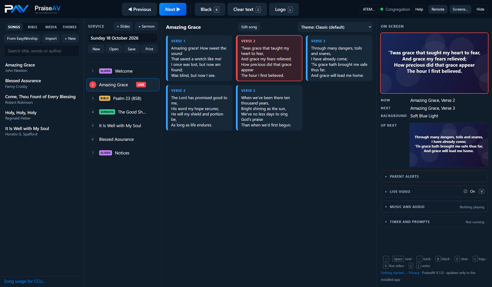
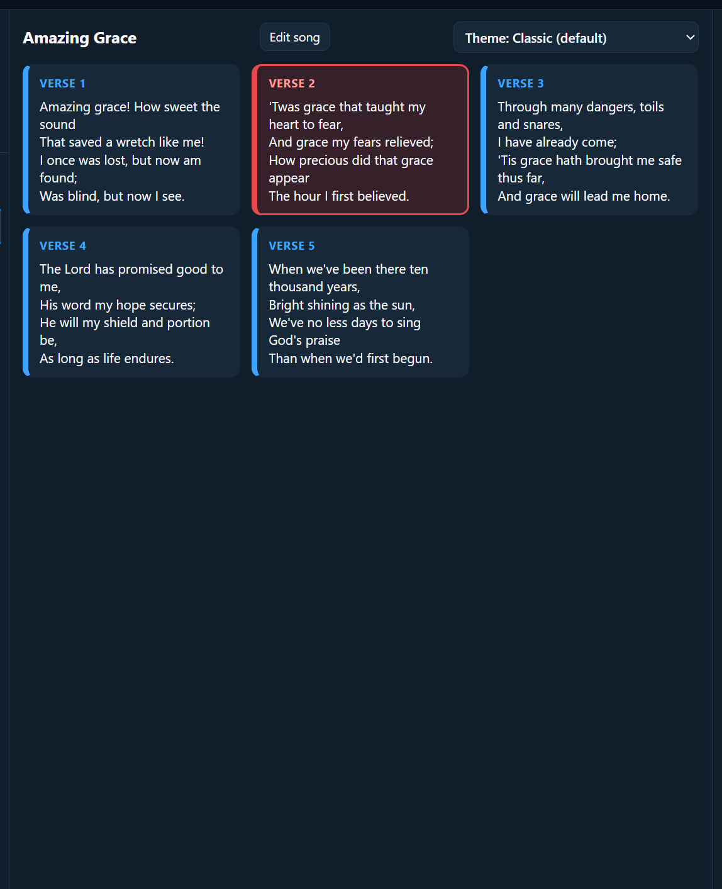
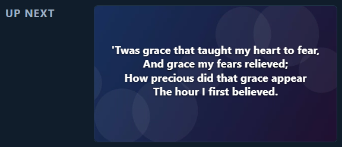
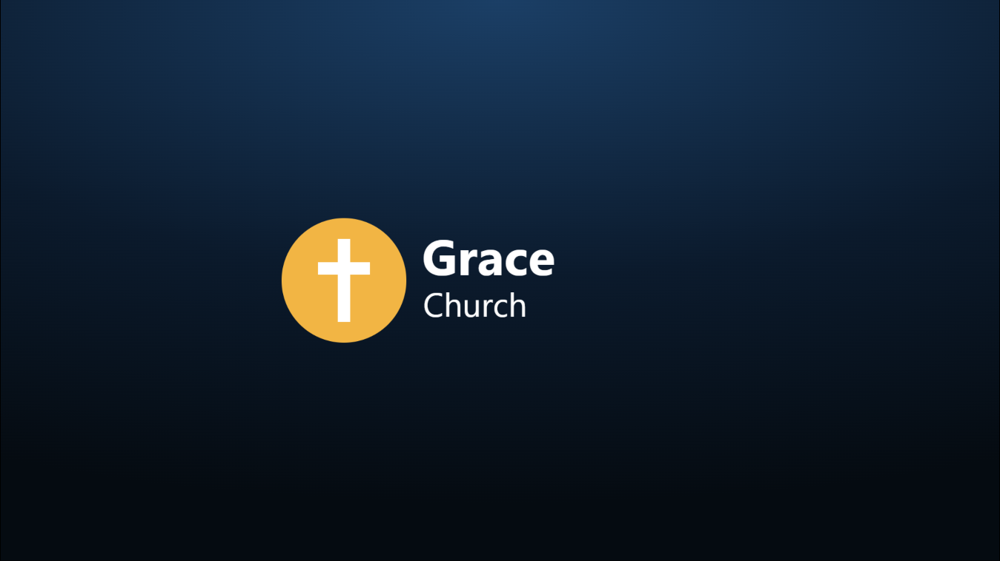

Running a service
Running a service
On Sunday you mostly need two things: click a slide to put it on screen, and Next to move on.

Putting something on screen
- Click an item in the Service column. Its slides appear in the middle.
- Click a slide. It’s on the screen now: it gets a red border, and the item gets a LIVE label.

Next and Previous
- Next (or →, Space, Page Down, or a clicker) shows the next slide.
- At the end of an item, Next goes on to the first slide of the next item in the service.
- Previous (or ←) goes back.
On screen and Up next
The right-hand column shows:
- On screen: exactly what the congregation sees now, with a red border.
- Now and Next: in words.
- Up next: a small picture of exactly what Next will put on the screen.

Black, Clear text and Logo
| Button | Key | What happens |
|---|---|---|
| Black | B | The screen goes black. Use it between items, or if anything goes wrong. |
| Clear text | C | The words go, the background stays. Good for a moment of reflection. |
| Logo | L | Your church logo. Good before and after the service. |
Press the button again (or the key) to come back. Clicking any slide comes back too.

Choose your logo in the Media tab: click a picture and Use as logo. See Media.
Videos
When a video is on screen, buttons appear under On screen: Pause / Play and From the start. It says whether the video loops or plays once. To change that, tick Loop above the video’s slides.
Videos play with sound on the projector’s computer (to your sound desk). The video in PraiseAV’s own window is silent.
The logo in the corner
Some churches like their logo small in a corner all the time, like a TV channel. Open Live video on the right, and tick Church logo in the corner, then choose which corner. The words move to stay clear of it.
Using a clicker
Presentation clickers (like the ones for PowerPoint) work straight away. Forward is Next, back is Previous, and the “blank screen” button is Black. Most work from the back of the room, so the person running PraiseAV can sit with everyone.
The phone remote does the same from a phone.
Hiding all the screens
Hide (top right) takes all PraiseAV’s screens away, for example to use the projector for something else. Show brings them back.